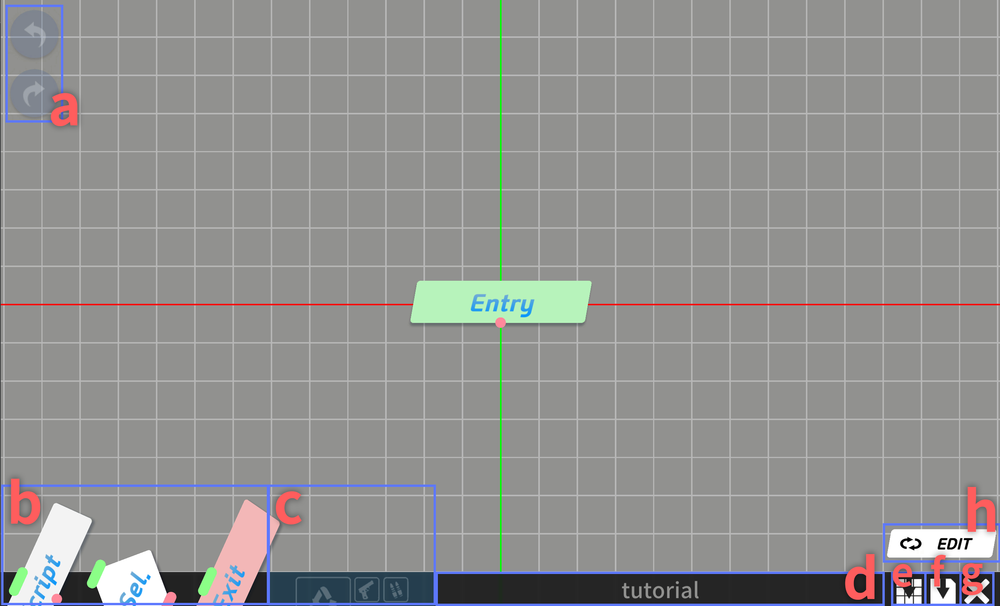
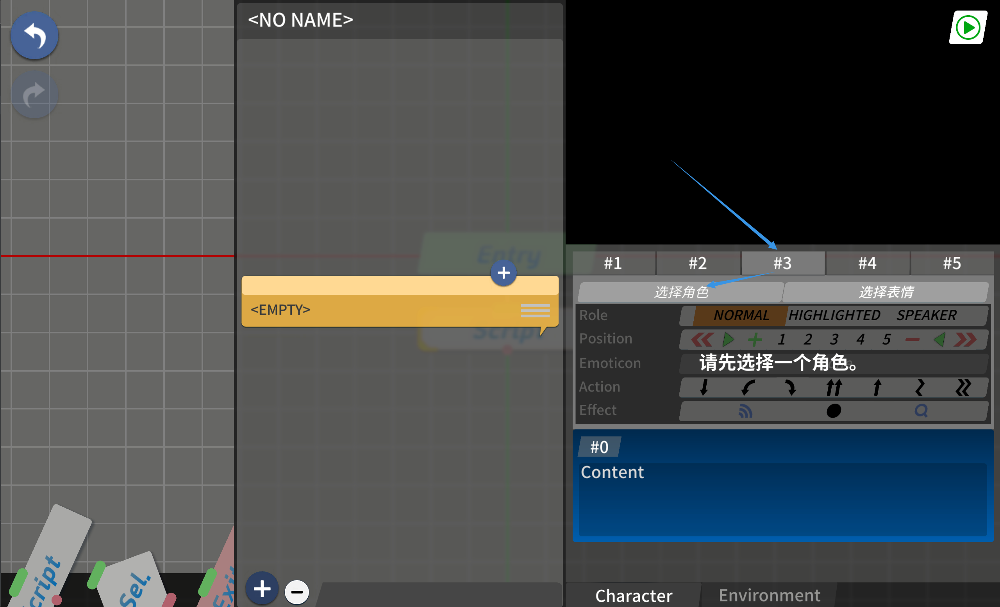
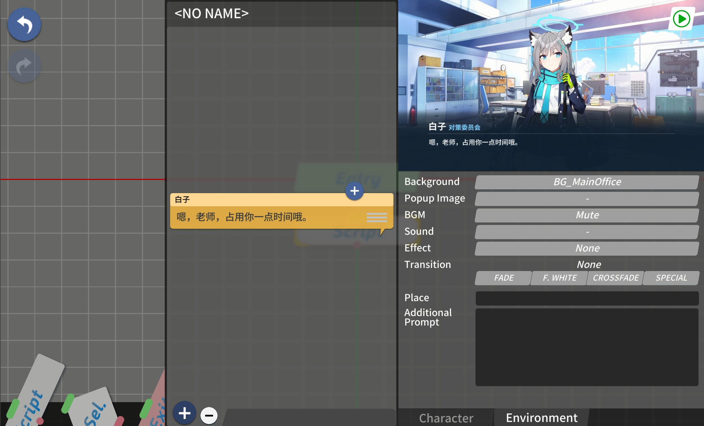
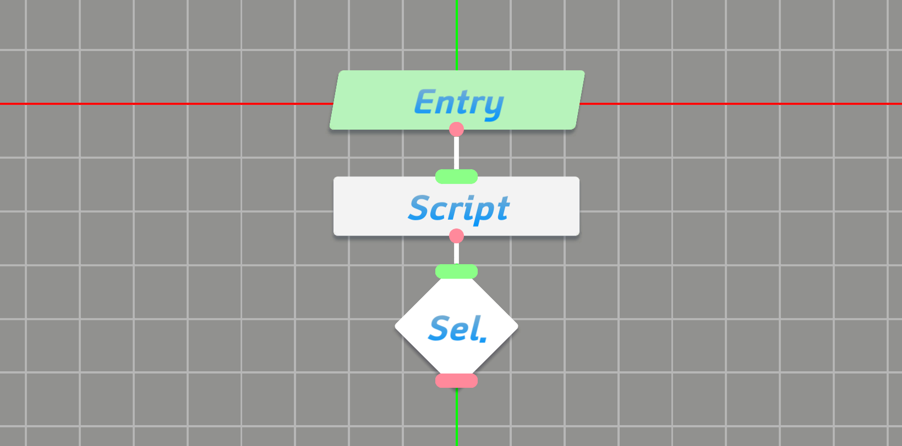

AzureArchive 实战：从零搭一段蔚蓝档案剧情
AzureArchive 是蔚蓝档案官方剧情编辑器，用节点连线方式创作对话、角色、场景与分支。这篇教程带你从新建项目开始，一步步把一段带角色和选项的剧情跑通，覆盖栏位摆放、环境切换、分支设置和鉴赏预览的完整流程。
读完这篇教程，你就能从零开始用 AzureArchive 搭出一段带角色对话、场景切换和选项分支的蔚蓝档案剧情，并且能在鉴赏模式里把它跑通。整个过程不写一行代码，全在可视化编辑器里完成。
准备：先搞清楚 AzureArchive 是什么
AzureArchive官网是蔚蓝档案的剧情创作工具——它不是游戏本体，而是一个让玩家自己搭剧情的编辑器。官方把它做成了"节点工厂 + 连线"的结构：左边拖节点、中间连线、右边填内容，最后一键鉴赏。
编辑器的界面很清爽：左侧是节点工厂，中间是节点画布，右侧是检查器面板。新建项目后系统会自动给你一个 Entry 节点，这就是整个剧情的起点。

第一步：新建项目，拿到 Entry 节点
打开 AzureArchive，点「新建项目」。系统会弹出项目设置对话框，填个名字就行，其他默认。确认后你会看到画布中央出现一个 Entry 节点——这是剧情的起点，删不掉也只能有一个，别纠结它为什么不能复制，这是设计。
第二步：拖出 Script 节点，写第一段对话
节点工厂里有四种核心节点，你现在只需要 Script——它是承载对话、角色、环境变化的主节点。按住 Script 节点拖进画布，放在 Entry 节点旁边。
接下来要把 Entry 连到 Script。每个节点的左侧叫入端、右侧叫出端。从 Entry 的出端按住拖线，落到 Script 的入端上——一条连线就成了。现在 Entry → Script 这条主链已经通了。

点一下 Script 节点，右侧检查器就出现了。先切到脚本标签，这里是写对话的地方。蔚蓝档案的对话格式是：先写发言者名字，换两行写正文。比如让白子说话：
白子
今天天气真好呢，老师。写完别急，点检查器底部的 ▶ 按钮预览一下，文字应该能正常显示。
第三步：摆角色立绘，选栏位
对话写完了，光有文字不够——画面上得有白子站着。
AzureArchive 有 5 个实际栏位 + 1 个虚拟栏位。实际栏位就是屏幕上的角色立绘位置：#1 左侧、#2 中偏左、#3 正中央（C 位）、#4 中偏右、#5 右侧。虚拟栏位 #0 专门放对话头像，不用管它。
现在白子说话，C 位最显眼，选 #3 栏位。在检查器底栏找到栏位选择器，点编号 3，右边属性面板就切到这个栏位了。
点「选择角色」按钮打开角色选择器。搜索白子——支持简繁中日韩泰六种语言，直接打「白子」或者「Shiroko」「シロコ」都行。搜出来点选，关闭选择器。
再点一次 ▶ 预览，白子的立绘应该出现在屏幕正中央了。

第四步：换背景和 BGM，让场景活起来
现在画面上有白子在说话，但背景还是默认的。切到检查器的 Environment（环境）选项卡，这里有三个设置项：Background（背景图）、BGM、Transition（过渡效果）。
背景从资源包里的 BG 列表选。安装包从官方下载拿，装完之后原版资源包也已经内置好了。滚动找到办公室场景 BG_MainOffice，点一下，再点 ▶ 预览——画面上应该已经换成办公室了。
BGM 的逻辑一样：从音乐列表挑一首配得上当前场景的。注意一个细节——每个 Script 节点独立设置 BGM，两个相邻脚本如果设同一个 BGM，音乐就不会被切断，能实现场景不变但对话切换的效果。想静音的话 BGM 选 None 就行。
过渡效果决定了从上一个脚本切到当前脚本时画面怎么变。默认是硬切，如果你希望场景转换更柔和，可以选淡入淡出。剧情高潮处想用特效过渡也可以，不过先把基础跑通再说。

第五步：加一个选项分支，让老师做选择
前面几步的剧情是线性的——白子说一段，读者被动接收。但蔚蓝档案的互动感来自老师的选项。这就需要 Selection 节点了。
拖一个 Selection 节点到画布，放在白子的 Script 后面。然后拖两个 End 节点，分别放在 Selection 的两侧。
关键点来了：Selection 节点本身没有内置选项，它的选项数完全取决于你给它连了多少条出端连线。所以先别急着编辑选项文字——先连线。
从 Selection 的出端分别拖线到两个 End 的入端。连好之后再点 Selection，右侧检查器里就会出现两个选项的文字编辑框。分别写上「当然要去！」和「再等一下吧」这种自然的话——千万别写「选项 A」「选项 B」，鉴赏的时候体验极差。
现在节点图应该长这样：Entry → Script（白子说话）→ Selection → 出端1 → End → 出端2 → End。两个 End 可以分别标记成「未完待续」和「结局」。Selection 分支还支持嵌套和多出口汇合，想玩复杂结构可以去AzureArchive文档翻一下完整的参数说明。

第六步：鉴赏模式跑通全流程
剧情搭完了，点顶部工具栏的鉴赏按钮，进入鉴赏模式。你应该能看到：办公室背景 + 白子立绘 + 对话文字。白子说完话后，屏幕底部会弹出两个选项按钮——点哪个就走哪条分支。
常见卡点：三个新手最容易翻车的地方
卡点 1：Entry 节点删不掉
这是正常的，别慌。Entry 是剧情起点，每个项目有且只能有一个，这是硬规则。如果你觉得 Entry 占地方，把它连到一个 Script 就行，画布上节点多了自然就不显眼了。
卡点 2：Selection 节点拖出来后没有选项文字
也是正常的。Selection 的选项数 = 出端连线数——没连线就没选项。先至少连两条出端到不同的 Script 或 End 节点，回头再点 Selection 编辑选项文字。
卡点 3：角色搜不到
AzureArchive 的角色搜索支持六种语言，但别名和非官方译名可能搜不到。比如你搜「芹香」找不到「茜香」，得用官方译名或原名。优先用中文官方名或日语原名，别用玩家圈的昵称。
进阶一句话
基础流程跑通之后，可以试试在 Selection 后面连另一个 Selection 做嵌套分支、用额外指令做角色动画（#zmc 可以平移缩放角色）、或者把两个分支的出端汇到同一个 Script 上做剧情汇合——AzureArchive 不限制这种连接，自由程度很高。
这套 AzureArchive 的官方资料也同步放在了三个仓库：GitHub是主源，国内访问可以直接去Gitee拿，GitCode那边也有一份，选哪个顺手就用哪个。